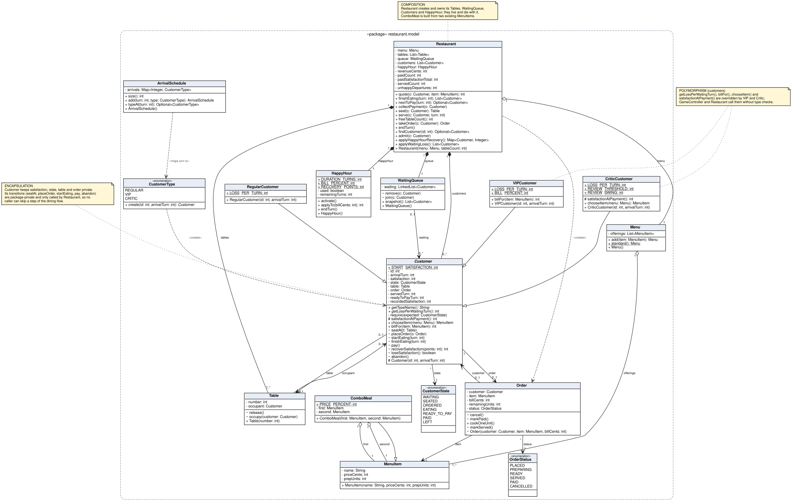
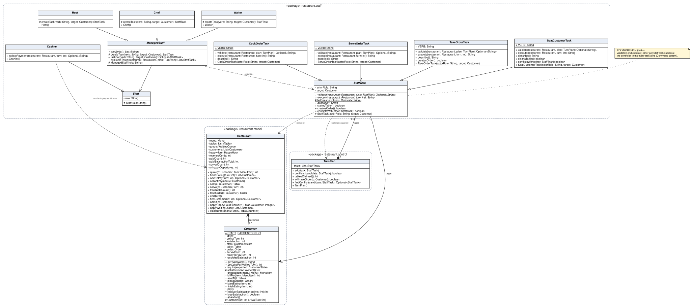
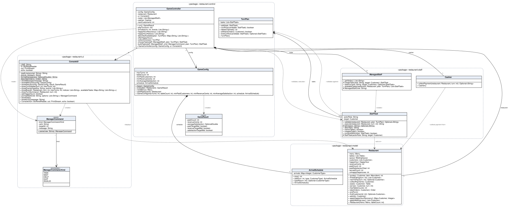
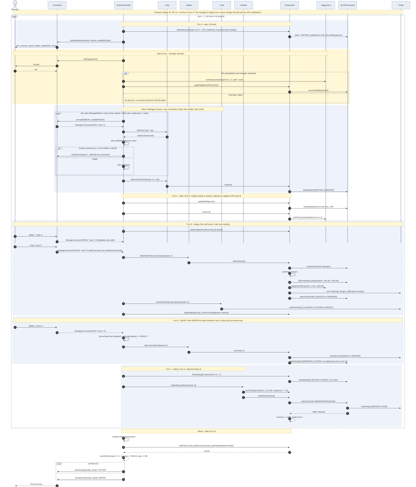

SC2002 Group Assignment - Design report. Group: <LAB GROUP / NUMBER> Members: <NAMES> Repository: <GITHUB URL>
A command-line, turn-based restaurant game in Java 17 built in three tagged, independently runnable stages:
stage-1 (Regular customers, Waiter, Chef, Cashier, full six-step turn, victory and defeat), stage-2 (VIP and Critic customers),
stage-3 (Host, ComboMeal, Happy Hour). The base setting is always available: 18 turns, 2 tables, one Waiter / Chef / Cashier, arrivals on turns 1, 4, 7, 10, 13, 16,
objective of at least 4 paid customers, $45.00 revenue and average satisfaction 60. Money is stored as integer cents. All game rules live in the
model, staff and control packages; ui only reads commands and prints state.
Turn flow in GameController.playTurn: (1) arrival; start-of-turn board; (2) manager chooses a task per staff role, each validated against the
TurnPlan and rejected with a reason if invalid, without using the task; (3) tasks execute in order Host, Waiter, Chef; (4) customers served earlier finish eating, Cashier collects one payment;
(5) waiting loss and abandonment; (6) after turn 18 the objective is checked.
Generated by tools/ClassDiagram.java from the compiled classes by reflection, so attributes, operations and visibility (+ public, - private, # protected, ~ package) match the code. Split into three views for legibility. Filled diamond = composition, open diamond = aggregation, hollow triangle = inheritance; multiplicities on associations; yellow notes annotate encapsulation, polymorphism and composition.

Encapsulation: Customer keeps satisfaction, state, table and order private; its transitions (seatAt, placeOrder, startEating, finishEating, pay, abandon) are package-private and each calls require(state), so no caller can skip a step of the dining flow.
Polymorphism: getLossPerWaitingTurn() (abstract), billFor(), chooseItem(), satisfactionAtPayment() are overridden by VIP and Critic; ComboMeal is a MenuItem, so ordering, cooking and billing treat it like any dish.
Composition: Restaurant creates and owns its Tables, WaitingQueue, Customers and HappyHour; ComboMeal is composed of two MenuItems.

Polymorphism: every StaffTask subclass supplies its own validate() and execute(); the controller never inspects the task type. Waiter, Chef, Host differ only in which verbs they accept and which task they build (createTask).

GameController owns the turn; TurnPlan records tasks chosen so far so validation can see "what will already have happened" (tables already claimed, an order that will exist this turn). ConsoleUI and ManagerCommand (with its Kind enum) are the boundary classes: they parse input and print state and hold no game rules.
Scenario (Stage 3): VIP customer #2 arrives on turn 4. The manager's choice to switch Happy Hour on changes the bill from $13.50 to $10.80 and restores the VIP's satisfaction.
Shown: arrival, Host seating, Waiter order and Chef cooking assigned in one turn, READY then SERVED, eating, payment, and the final result check, with the guards (alt) and loops.

| Class | Responsibility |
|---|---|
GameController | Runs the six-step turn; asks UI for decisions; delegates validation/execution to tasks and rule changes to Restaurant. |
Restaurant | Aggregate: tables, queue, customers, Happy Hour, score; the only place that changes several entities together (seat, take order, serve, pay, abandon). quote() = customer bill, then Happy Hour. |
Customer (+Regular, VIP, Critic) | Own state machine and satisfaction; type-specific loss, bill, food choice, recorded satisfaction. |
Order | Item, locked bill, remaining preparation units, status TAKEN-PREPARING-READY-SERVED-PAID/CANCELLED. |
MenuItem, ComboMeal, Menu | Dishes (price in cents, units); combo derives price/units from two dishes. |
StaffTask (+Seat, TakeOrder, Serve, Cook) | One command: validates itself with a reason, executes, describes itself. |
ManagedStaff (Waiter, Chef, Host), Cashier | Which verbs a role understands and which tasks it can be given; Cashier pays oldest READY_TO_PAY customer automatically. |
TurnPlan | Planned tasks of the current turn for validation. |
HappyHour | Once-per-game, 2-turn pricing/recovery policy with remaining duration. |
GameConfig, ArrivalSchedule, GameResult | Base setting and objective, who arrives when, outcome of the check. |
ConsoleUI, ManagerCommand | Boundary: parse input to a command, print board, events, result. |
| Principle | Evidence in the code |
|---|---|
| SRP | Validation and execution of each action sit in its own task class; the UI has no rules; GameConfig holds setting and objective; Customer only knows customer behaviour. |
| OCP | Stage 2 added VIP and Critic, and Stage 3 added Host, ComboMeal and Happy Hour, without changing StaffTasks or the six-step flow. GameController changed only for the Host in the roster and the Happy Hour prompt (see README tables). |
| LSP | Any Customer subtype and any MenuItem (incl. ComboMeal) can replace its parent: unit test "Regular, VIP and Critic all follow seat-order-cook-serve-eat-pay"; Host/Waiter/Chef are used through ManagedStaff. |
| ISP | Not claimed: the design has no interfaces. We kept small abstract classes (StaffTask, ManagedStaff) instead of interfaces for the sake of a checklist. |
| DIP | Partly: the controller and tasks depend on the abstractions Customer, StaffTask, ManagedStaff, MenuItem. Not fully: GameController depends directly on the concrete ConsoleUI; an interface would make UI swapping and testing easier. |
TurnPlan and execute later. Cost: extra class and "will have" queries; benefit: exact step order, invalid choices cost nothing, the same task class works for Host and Waiter.Staff class with a role enum and a switch in GameController (and instanceof/type checks for customers). Simpler at Stage 1 but every new customer type or action edits the controller, which the brief forbids for customer behaviour. Rejected.victory.in vs victory_no_happy_hour.in, Stage 3): with it 5 paid, $68.94, average 82.4; without, 5 paid, $73.80, average 73.6 (Critic served at 52 gets a harsh review).Tags stage-1 (28fc9a0), stage-2 (dc9f640), stage-3 (42caf7c), each a runnable commit that builds with ./build.sh and passes tests/run_tests.sh N (30, 37 and 59 unit checks plus transcripts). Full file-by-file tables with reasons and compare links are in the README.
| Transition | New | Changed |
|---|---|---|
| 1 to 2 | VIPCustomer, CriticCustomer | Customer (hooks billFor, satisfactionAtPayment), CustomerType, Restaurant.quote, Cashier (message), GameConfig (schedule) |
| 2 to 3 | Host, ComboMeal, HappyHour | Restaurant (HappyHour, quote, recovery), Customer (recoverSatisfaction), GameConfig (menu), GameController (roster, Happy Hour), ConsoleUI (prompt, status) |
No file was deleted. Stage 1 and 2 tests were kept as evidence (docs/evidence), and Stage 3 re-runs all earlier unit checks, showing earlier behaviour still works.
All runs are deterministic: ./run.sh --echo < input must equal the stored .expected transcript (tests/run_tests.sh N does the diff).
| Stage | Run (input file) | Result |
|---|---|---|
| 1 | victory.in | 5 paid, $66.00, average 79.2 - VICTORY |
| 1 | defeat_neglect.in / defeat_idle.in | 3 paid, $42.00 / 0 paid - DEFEAT |
| 1 | invalid_input.in | wrong state, unknown customer, non-number, wrong role and gibberish each explained; task not consumed |
| 2 | victory.in | 4 paid, $58.50, average 77.0 - VICTORY (VIP burger $13.50, Critic recorded 74) |
| 2 | victory_critic_harsh.in | 5 paid, $73.50, average 73.6 - VICTORY (Critic recorded 42) |
| 2 | defeat_critic_walkout.in | 2 paid, $22.50 - DEFEAT (Critic leaves) |
| 3 | victory.in | 5 paid, $68.94, average 82.4 - VICTORY (Happy Hour on at T11) |
| 3 | victory_no_happy_hour.in | 5 paid, $73.80, average 73.6 - VICTORY |
| 3 | defeat_neglect.in | 2 paid, $22.50 - DEFEAT |
| 3 | hh_demo.in | Host and Waiter seat two customers in one turn; VIP Burger in Happy Hour = $10.80; Salad after Happy Hour ends = $9.00 |
Rule checks covered by the unit tests: READY dish served only the next turn; one eating turn, payment the turn after; no early charge; abandonment cancels the order and frees the table; served customers lose nothing; integer-cent rounding (combo $24.30); Happy Hour once per game, two turns, 20% after the VIP discount, price locked at order time, +15 capped at 100, N/A average before the first payment.
Customer by only two hook methods, and the controller not at all.TurnPlan idea; the Host and Waiter seating the last free table needed a table-claim check.Restaurant, and add JUnit instead of the hand-written RuleTests runner.